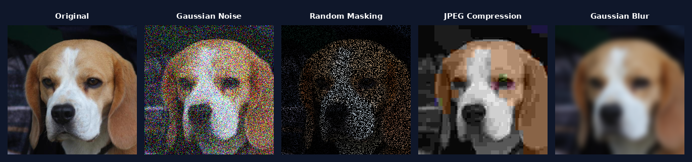

This post is a companion to our paper DiffEM: Learning from Corrupted Data with Diffusion Models via Expectation Maximization, joint work with Fan Chen, Giannis Daras, Antonio Torralba, and Constantinos Daskalakis.
Introduction
Diffusion models have shown promising results in generative modeling. But training a diffusion model will require a large dataset containing high-quality data. In many cases in practice that is just a luxury far from reality. Most of the data on the internet is trash.
These diffusion models are great when it comes to learning highly complex distributions but that comes with the expensive cost of easily overfitting.
In this blog we will be going over a method from DiffEM paper which trains a diffusion model in a loop, and with each iteration will improve the dataset quality and train the diffusion model alongside it. We will see that this is an Expectation Maximization (EM) Algorithm, the EM approach is well-known and well-studied in inference for other problems and it is our good old friend.
Setup and Intuition
Before jumping right into the math and code to tackle the problem it is good to think about it a little bit and try to understand what are the intuitions behind this. Let's first make the setup clear. We have access to a dataset $D_Y = \{y_1, y_2, \ldots, y_N\}$ that comes from the data distribution which we will denote with $P_Y$. Unfortunately the dataset is corrupted, the corruption channel is denoted with $Q(\cdot|X)$ and is known, we are interested to learn the distribution $P_X^\star$ which we know satisfies the following equation:
$$P_Y(y) = \int_{\mathcal{X}} P_X^\star(x) \, Q(y|x) \, dx$$or in a more compact form we can write it as the pushforward of $P_X^\star$ through the channel $Q$ (as the information theory enjoyers like it):
$$P_Y = Q \# P_X^\star$$Let's denote the space that $X$ and $Y$ live in with $\mathcal{X}$ and $\mathcal{Y}$ respectively. There is no assumption on these two spaces, they could be different.
Some Examples
Let's come up with some examples of this setup in real practical problems.
$\mathcal{Y} = \{$A dataset in the wild that are not curated, so the images are not good quality$\}$ and you want to learn the distribution of the good quality underlying images.
There are many popular corruption channels $Q$ that we could come up for this example:
Gaussian Noise Channel
$$Q(\cdot|X) = \mathcal{N}(X, \sigma^2 I)$$Random Masking Channel
$$Y \sim Q(\cdot|X) \iff Y = A \odot X \quad \text{where } A_{ij} \sim \text{Ber}(0.5)$$JPEG Compression Algorithm
$$Q(\cdot|X) = \text{JPEG}(X)$$Gaussian Blur Channel
$$Q(\cdot|X) = X \ast K_\sigma \quad \text{where } K_\sigma \text{ is a Gaussian kernel}$$
Corrupted samples from the toy dataset.
Method
Let's say that we are seeking a model learning the joint distribution class $\{q_{\theta}(x, y)\}_\theta$ and we would like to find $\theta$ such that the following maximization on log likelihood would hold:
$$\max_\theta \mathcal{L}(\theta) \text{ where } \mathcal{L}(\theta) = \textcolor{blue}{\mathbb{E}_{Y \sim P_Y^\star} \log q_\theta(y)} \tag{1}$$Which is equivalent to minimizing the KL divergence between $P_Y^\star$ and $q_\theta$:
$$D_{\mathrm{KL}}(P_Y^\star \| q_\theta) = \underbrace{\textcolor{blue}{-\mathbb{E}_{Y \sim P_Y^\star} \log q_\theta(Y)}}_{\text{function of } \theta} + \underbrace{\textcolor{red}{\mathbb{E}_{Y \sim P_Y^\star} \log P_Y^\star(Y)}}_{\text{constant w.r.t.}\ \theta} \tag{2}$$Since the blue terms in equations (1) and (2) are equivalent up to a sign, and the red term is a constant with respect to $\theta$, minimizing the KL in equation (2) reduces to optimizing its first term alone, which is exactly the maximization in equation (1).
It's not really feasible to directly optimize this, but there are ways to go around it. Let's try to maximize some lower bound on $\mathcal{L}(\theta)$ instead of trying to maximize it directly. We could use the following ELBO bound for all the distributions $q_\phi$:
$$\mathcal{L}(\theta) = \mathbb{E}_{Y \sim P_Y^\star} \log q_\theta(y) \ge \mathbb{E}_{Y \sim P_Y^\star} \mathbb{E}_{X \sim q_\phi(\cdot|Y)} \log \frac{q_\theta(X, Y)}{q_\phi(X|Y)}$$Optimizing on the lower bound yields:
$$\max_\theta \mathcal{L}(\theta) \ge \max_\theta \mathbb{E}_{Y \sim P_Y^\star} \mathbb{E}_{X \sim q_\phi(\cdot|Y)} \log \frac{q_\theta(X, Y)}{q_\phi(X|Y)}$$And again you can break down the term on the right hand side (just like we did right before this with the KL divergence in equation (2)):
$$\begin{aligned} &\mathbb{E}_{Y \sim P_Y^\star} \mathbb{E}_{X \sim q_\phi(\cdot|Y)} \log \frac{q_\theta(X, Y)}{q_\phi(X|Y)} \\ &\quad= \underbrace{\textcolor{blue}{\mathbb{E}_{Y \sim P_Y^\star} \mathbb{E}_{X \sim q_\phi(\cdot|Y)} \log q_\theta(X, Y)}}_{\text{function of } \theta} - \underbrace{\textcolor{red}{\mathbb{E}_{Y \sim P_Y^\star} \mathbb{E}_{X \sim q_\phi(\cdot|Y)} \log q_\phi(X|Y)}}_{\text{constant w.r.t.}\ \theta} \end{aligned}$$Since the red term does not depend on $\theta$, maximizing the ELBO over $\theta$ reduces to maximizing the blue term alone. We have said that $q_\phi$ could be any distribution and if you pay close attention to the first term, one of the expectations is taken over $q_\phi$, so it better be something that we already have learned and we can sample from. This is the first spark of why we are going to use an Expectation Maximization Algorithm!
In particular, the EM algorithm can be succinctly written as: Starting from an initial point $\theta^{(0)}$, iterate
$$\theta^{(k+1)} = \arg\max_\theta \, \mathbb{E}_{Y \sim P_Y^\star} \mathbb{E}_{X \sim q_{\theta^{(k)}}(\cdot|Y)} \log q_\theta(X, Y).$$In our setting, since the likelihood $\mathbf{Q}$ is known, we have $q_\theta(x, y) = \mathbf{Q}(Y = y | X = x)\, q_\theta(x)$. Thus substituting will yield:
$$\begin{aligned} \theta^{(k+1)} &= \arg\max_\theta \, \mathbb{E}_{Y \sim P_Y^\star} \mathbb{E}_{X \sim q_{\theta^{(k)}}(\cdot|Y)} \log q_\theta(X, Y) \\ &= \arg\max_\theta \, \mathbb{E}_{Y \sim P_Y^\star} \mathbb{E}_{X \sim q_{\theta^{(k)}}(\cdot|Y)} \left[ \underbrace{\log \mathbf{Q}(Y|X)}_{\text{constant w.r.t.}\ \theta} + \log q_\theta(X) \right] \\ &= \arg\max_\theta \, \mathbb{E}_{Y \sim P_Y^\star} \mathbb{E}_{X \sim q_{\theta^{(k)}}(\cdot|Y)} \log q_\theta(X). \end{aligned}$$It is easy to see that the optimization that we are doing in each step is equivalent to:
$$\theta^{(k+1)} = \arg\min_\theta \, D_{\mathrm{KL}}(\pi^{(k)}(x) \| q_\theta(x)), \tag{3}$$
where $\pi^{(k)}(x) = \mathbb{E}_{Y \sim P_Y^\star}[q_{\theta^{(k)}}(x|Y)]$ is a posterior mixture with respect to the observation distribution.
There are some natural questions to ask here. Like if there is any guarantee that this will converge or not, or how fast this will converge. The answer is fortunately yes if $\mathbf{Q}$ isn't some crazy channel (obviously for any $\mathbf{Q}$ the problem is not possible since the channel could then zero out all the information and you can't do anything). In order to see more details and proofs on these questions and other questions, you should check out the DiffEM paper.
Fun fact: It could be proved that the iterative process in equation (3) is equivalent to a mirror descent in the space of distributions with the KL divergence as the Bregman divergence (check this paper out for more math heavy details).
This iterative method is shown in the following algorithm:
The $L_{\text{SM}}$ loss is the typical score matching loss (from this great paper) for the model and is defined as follows:
$$L_{\text{SM},k}(\theta) = \mathbb{E}_{t,\, X \sim \mathcal{D}_X^{(k)},\, Y \sim \mathbf{Q}(\cdot|X)} \, \mathbb{E}_{Z \sim \mathcal{N}(0, I),\, X_t = X + \sigma_t Z} \left\| \mathbf{s}_\theta(X_t, t | Y) + Z \right\|^2$$After you finish training the conditional model, if you want to have an unconditional generative model you can generate a new clean dataset by conditioning it on the whole corrupted dataset and train a generative diffusion model.
Results
Let's take a look at one of the example experiments that we did in the paper. In this experiment we took the CIFAR-10 dataset and corrupted it with random masking with a masking probability of $0.75\%$ then we gave only the corrupted dataset and nothing else to the DiffEM algorithm and we let it run for about $20$ EM iterations. Here are some of the measurements for the final model both the conditional model that is trained in the EM loop and the unconditional model after training the conditional model.| Task | Method | IS ↑ | FID ↓ | FDDINOv2 ↓ | FD∞ ↓ |
|---|---|---|---|---|---|
| Posterior Sampling |
Ambient-Diffusion | 7.70 | 30.76 | 260.23 | 256.11 |
| EM-MMPS | 9.77 | 6.49 | 237.02 | 231.80 | |
| DiffEM (Ours) | 9.81 | 4.68 | 220.97 | 216.53 | |
| DiffEM (Warm-started) | 9.66 | 4.66 | 186.90 | 180.70 | |
| Unconditional Generation |
Ambient-Diffusion | 6.88 | 28.88 | 1068.00 | 1062.98 |
| EM-MMPS | 8.14 | 13.18 | 643.59 | 640.14 | |
| DiffEM (Ours) | 8.57 | 10.24 | 598.18 | 594.75 | |
| DiffEM (Warm-started) | 8.49 | 10.33 | 546.07 | 541.53 |
Table 1: Posterior sampling and unconditional generation performance on CIFAR-10 with random masking with corruption rate of $\rho = 0.75$ compared to Ambient-Diffusion and EM-MMPS. The details of DiffEM with warm-start are described in Section 4.1.1.